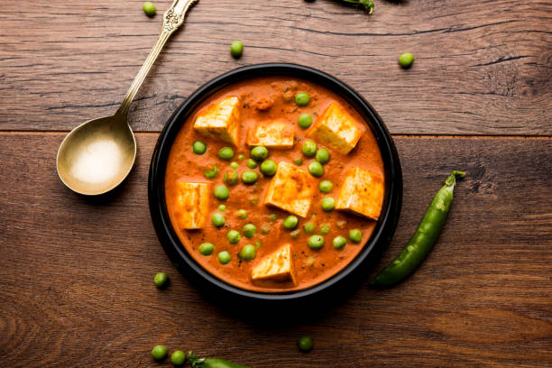

Matar Paneer

Description
Matar Paneer is a vegetarian dish made with green peas and paneer in a spiced gravy.
Ingredients
- 200g paneer (cubed)
- 1 cup green peas
- 2 onions (chopped)
- Tomatoes (pureed)
- Spices (cumin, garam masala, etc.)
- Oil for cooking
Steps
- Heat oil in a pan; sauté onions until golden.
- Add tomato puree and spices; cook until thick.
- Add peas and paneer; cook for a few minutes.
- Serve hot with naan or rice.